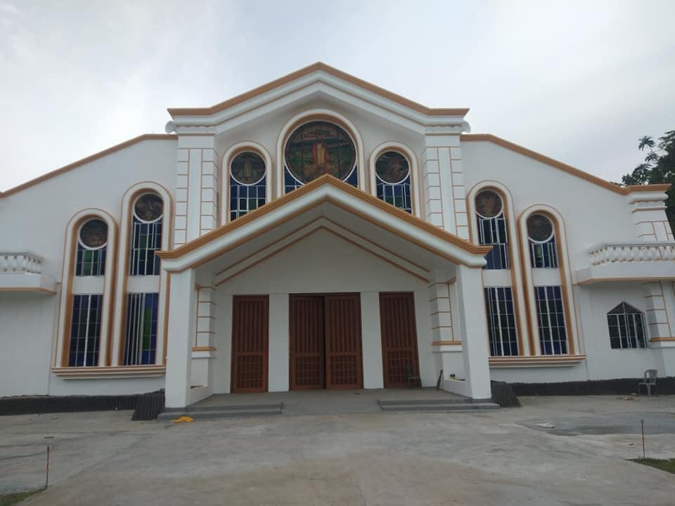

28
Aug
Feast of Saint Augustine
Join us in celebrating the feast of our patron, Saint Augustine of Hippo. Mass and festivities.
"Our hearts are restless until they rest in You."
— Saint Augustine of Hippo
Sagbayan, Bohol, Philippines. A community who firmly believes in God's word. Come journey with us.
Welcome to the official website of Saint Augustine Parish, under the patronage of Saint Augustine of Hippo—Doctor of the Church and seeker of Truth. May this site be a source of knowledge and an avenue for deepening your relationship with God.
Under the patronage of Saint Augustine of Hippo
Saint Augustine Parish in Sagbayan, Bohol, is a vibrant Catholic community dedicated to living the Gospel and the teachings of our patron, Saint Augustine of Hippo. We strive to be a place where every soul can find rest in God.
In the spirit of Augustine—who sought Truth with his whole heart—we welcome pilgrims, parishioners, and seekers. Whether you are from Sagbayan or visiting Bohol, you are welcome here.
"To fall in love with God is the greatest romance; to seek Him the greatest adventure; to find Him the greatest human achievement."

Join us for the Holy Eucharist
Please contact the parish office for current weekday and Sunday schedules.
Celebrate the Lord's Day with our community. Schedules may vary; check with the parish for times.
Baptism, Confession, Matrimony, and other sacraments by appointment. Visit or call the parish office.
Latest news and updates from Saint Augustine Parish
Join us in celebrating the feast of our patron, Saint Augustine of Hippo. Mass and festivities.
Discover how you can serve. Lectors, choir, catechism, and more welcome new members.
Alone we can do so little; together we can do so much.
Proclaim the Word at Mass
Lead the community in song
Ministers of Holy Communion
Faith formation for children & youth
Prayer to Saint Augustine & parish devotions
O Lord, our hearts are restless until they rest in You. Grant that we, like Saint Augustine, may seek You with our whole heart and find in You our peace and our joy. Through Christ our Lord. Amen.
Novena schedules and other devotions are announced at Mass and in the parish bulletin.
Words of our patron, Saint Augustine of Hippo
"Faith is to believe what you do not see; the reward of this faith is to see what you believe."
"Love God and do what you will."
"You have made us for Yourself, O Lord, and our hearts are restless until they rest in You."
Visit or get in touch with the parish
Saint Augustine Parish
Sagbayan, Bohol, Philippines
Contact the parish office for Mass schedules, sacraments, and inquiries.
Your generosity helps us sustain our ministries and serve the community.
Give Online / Inquire